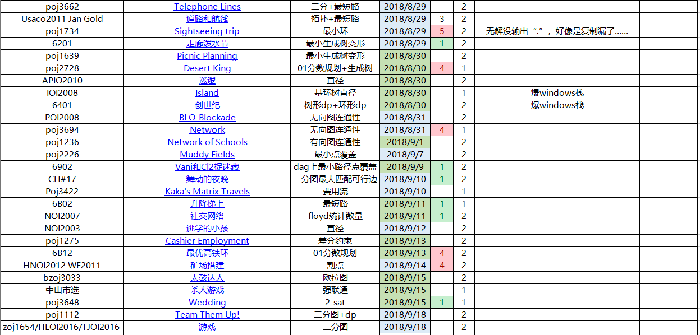
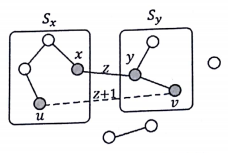

本处难度分档以个人实力为参照系
难度1：半小时内想出，半小时内ac
难度2：半小时想不出，看题解，服气
难度3：半小时想不出，看题解，ac后依然觉得难度很大

另外，由于追进度，对于coding部分比较有自信的题目，不再具体实现
0x60 图论
1 poj3662 Telephone Lines
8.29 难度2
找出一条从1到n的路径，上面第k+1大的那条边，权值最小
好弱啊第一题就不会做，天天看题解……
最小化除了前面k个以外的最大值，二分答案
把所有长度在mid以内的边看做0，否则1
跑一次最短路，如果花费在k以内，意味着可行
代码略
2 noip2009 最优贸易
8.29 难度2
3 Usaco2011 Jan Gold 道路和航线
8.29 难度2
这道题挺有意思的，本来以为是裸题想跳的，看到lyd说spfa会tle，就不想以身试法了
（网上说加上slf就好了……不过本着锻炼思维的理念，学习一下正解）
因为题目保证航线没有环，本来以为这仅仅是保证没有负环，
没想到这还是一个突破口（还有就是道路都是双向的这个性质）
如果只加入双向边，那么就会形成多个联通块
如果缩点后再加入单向航线，图会形成一个有向无环图，是可以通过拓扑得到最短路的
不过具体而言，不能真的缩点，因为需要具体得出每个点的最短路
大致上就是沿着负权边找到各个联通块，以拓扑为框架跳来跳去
具体的话有个细节：
就是有可能st所在的联通块，入度不为0
或者可能出了st联通块外，还有其他入度不为0的联通块
所以还是要按照平常拓扑那样，把所有入度为0的加入栈
不过为了防止，单源最短路被扰乱，应该先把st联通块的dis置0，这样无论如何也没法更新掉了
然后其他联通块的inf也应该设置大一点，这样即使被更新，也是一个很大的值
然后输出no path的时候，不能只是和inf比较，因为可能曾经被更新，
要看它是否明显超过理论正常最大距离( $T \times 10000=250000000$ )，设为0x3f3f3f3f就够了
undefined
4 poj1734 Sightseeing trip
8.29 难度2
floyd找最小环
undefined
5 6201 走廊泼水节
8.29 难度2
这道题设计得很好
个人很喜欢这种，对看似简单、经典的算法，推陈出新地挖掘细节、原理的题目结果就不会做了……
这道题从边的角度思考会简单一些
想到边，以及最小生成树，会想到kruskal
把所有边排序，然后关键就是“完全图中的边，是否跨树”
对于这一点我只能出个数据把自己的乱搞做法卡掉，但不知道怎么去解决
其实这条边什么时候会跨树呢？
盗lyd好图：

是不是豁然开朗了？
模拟kruskal的过程，连接两个树之间的边，只会在这一次跨树
此时，他们的取值都应为z+1，个数则是 $Sx \times Sy-1$
undefined
6 poj1639 Picnic Planning
8.30 难度2
就是限制了根节点度数的最小生成树
先去除1节点，跑出每个节点的最小生成树，然后找最小的一条边连接上去
然后有可能可以对某个点x，去掉某条1到x的一条边，并连接x和1
7 poj2728 Desert King
8.30 难度1
01分数规划+最小生成树
不过不知道为什么跑得很慢
log的大小，无论如何都是在100以内的，那么正常来说这道题就一亿，时限3s
个人觉得它非要卡二分我也没办法，Dinkelbach大概只是恰好快而已（毕竟那东西的复杂度很玄学）
undefined
8 APIO2010 巡逻
8.30 难度2
这道题的k=1、2，先从k=0入手
不难发现，每条边一定要经过两次（因为是树，一定会递归一次回溯一次），所以就是$2(n-1)$
对于k=1，加入一条新的边以后，一定出现了环，就不一定是两次了
同时，在这个环上，其他边都从经过两次变成了经过一次（例如题目中的a）
不难发现，此时答案为$2(n-1)-(直径长度-1)$
对于k=2的情况，稍微复杂了一些
如果产生的新的环，没有和原本的环重叠，那么同样是不用经过一次（例如题目中的b）
但是，如果重叠了（例如题目中的c），那么由于“新的边必须经过一次”这个限制，公共部分又变成了要经过两次
总上所述，第一次找直径L1，把边权变为-1
第二次找到直径L2，答案即$2(n-1)-(L1-1)-(L2-1)$
有木有觉得apio的图片非常良心
9 CH#56C 异象石
8.30 难度2
先从每个节点上都有石头的情况开始考虑
如果从边的角度，那就是边总长
但因为这道题，主要从点的情况考虑，所以转化为，按照dfs搜索顺序，经过的相邻两点间距离/2
而对于不满的情况也是类似，把存在的所有点，按照dfs序收尾相接，相邻间距离和即为答案
那么具体实现的时候，可以搞一个set，用upper_bound等找相邻并动态维护当前总和即可
10 BJWC2010 严格次小生成树
8.30 难度2
按照惯例，对于这种在树上有非树边的问题，可以考虑一下，由非树边产生的环
例如本题，对于这个环，我们断掉任何一个，整个图依然是树（本来就是挂起来的无向无环图）
所以说，对于每条边，其贡献就是，把它替换掉原本树上路径中最大那一条产生的差
然后因为求的是严格次小，所以有种特殊情况，就是最大那个和当前边相同长
引理：
在最小生成树原本的路径中，一定不会有比当前非树边大的边
证明：
否则应该被当前非树边替换掉（替换掉一定不会有其他副作用之类，还是那句话，树本来就是挂起来的无向无环图）
那么也就是我们还需要且只需要再考虑次大值
具体实现的话，用一个倍增st表维护一下就好了（以倍增lca为框架）
11 IOI2008 Island
8.30 难度1
题意为，给出一个基环树森林，每个节点只能去一次，起点任意
跨基环树的时候，不能回到曾经去过的基环树
求最大化的【经过的基环树边的总和】
显然答案就是每个基环树内直径之和
然后基环树直径这种东西，写个dfs找环，dfs向下找最大深度，然后套个单调队列就好了
12 6401 创世纪
8.30 难度2
在lxj的提醒下才想到正解……
其实一点都不难
图显然是一个内向树森林，要求选自己，则至少一个孩子不被选
考虑dp，$f(x,0/1)$表示当前子树满足条件时，x选择0/1的最大选择节点数
先搞定树上的部分，如果枚举固定一个孩子不选，然后其他乱搞，但给个菊花图就会炸
不难想到取补，把任意情况减去所有孩子都选了的情况（套路之记录次小值）
对于环上的怎么搞呢？
看一眼这里就知道了
13 POI2008 BLO-Blockade
8.31 难度2
教程
然后还是不会做……
在搜索树上考虑
对于每个节点，假如它不是割点，那么只有它和其他人是联通块，贡献为$2(n-1)$
而如果是割点，我们需要知道产生了多少个联通块，以及他们的大小
但怎么找？
$low_y \leq dfn_x$
这等价于割点的判定条件
主要考虑是可以相等，因为每次我们会断掉所有的边
联通块有三种：
- x自己，大小1
- 共有t个满足上面的条件，大小为在搜索树上的子树大小
- 剩下的所有点（假如大小不为0，则一定存在）
第三点非常容易想漏，所以说建议多构造几组数据，当然对拍也是可以如果求稳的话
时间复杂度$O(n+m)$
undefined
14 poj3694 Network
8.31 难度1
教程
考虑合并每个e-DCC，形成一棵树
然后倍增预处理一下lca
然后对于操作，其实就是合并x到y树上路径上的所有点，这个可以考虑用并查集维护
由于单个的小合并操作，只会发生n次，即使并查集log，也只有nlogn
而这个复杂度是超脱于询问这个循环之外的总复杂度
其实细节挺多的，大致流程：
- tarjan找到e-DCC，确定代表元素，初始化其并查集（最后别漏了根节点）
- 建立新的边目录，预处理倍增lca
- 回答询问的时候，一个个向上跳，维护割边数量cntundefined
15 poj2942 Knights of the Round Table
9.1 难度2
题意：找出有多少个骑士，无法出席任何会议
会议的要求是有奇数个人，成环形后相邻的人没有憎恨关系
因为是环形，考虑连成一个环，不难想到建立一个补图，用【无憎恨关系】来建边
那么就转化成，有多少个点，不在任何奇环（奇数个点的简单环）中
然后判断奇环可以染色，但怎么标记呢？暴力搞我自己都能出个数据卡成nm
百思不得其姐，又去膜题解
题解给出的又是两个结论……还好这一次，这两个结论的证明都很简单
结论1：奇环不会垮v-DCC存在
证明：显然两个v-DCC能合并成一个v-DCC，与v-DCC的“极大”矛盾
结论2：如果某个v-DCC中有奇环，则整个v-DCC的每个节点，至少被一个奇环所包含
假设有奇环外节点x，总是能和奇环上任意两个节点vi和vj形成奇环，
因为无论【x到vi+x到vj】的奇偶性如何，奇环上两个点间距离总是能取奇数或者偶数……
因为奇=奇+偶，亘古不变……
怎么说呢？这两个结论都不是太好猜，但偏偏缺一不可
16 poj1236 Network of Schools
9.1 难度2
开始想法：
设强连通分量缩点后，a=【入度=0】，b=【出度=0】
那么第一问求a，第二问求b
其实已经和正解接近了，但还是错误的
第二问求的其实是max(a,b)
重新思考，
对于入度为0的scc，如果起点不在这里就凉了，要消除掉
对于出度为0的scc，如果起点在这里就凉了，要消除掉
因为一次可以同时消除两种各一个，得证
17 poj2226 Muddy Fields
9.7 难度2
不会做的经典模型
将连续的泥地分为行泥泞块和列泥泞块，形成了二分图
那么，对于每个小泥地，至少要被其中一种覆盖
那么把每个小泥地作为边，恰好连接两个元
求最小覆盖即可
18 6902 Vani和Cl2捉迷藏
9.9 难度2
神仙结论题，结论不好猜，证明不好想，但出得挺好
因为不能有路径相连，可以联想到传递闭包（居然没有想到），转移为边的相连（构造新图，边就是用闭包得出来的结果）
那么现在类似于要找最大独立集
具体做法：oi之路-图论-其他-Dilworth定理
undefined
19 CH#17 舞动的夜晚
9.10 难度2
详见oi之路的二分图一章
undefined
20 Poj3422 Kaka’s Matrix Travels
9.10 难度1
考虑用流量表示路径的移动
然后因为每个格子只能取一次，拆一下点
$st=>(1,1,0),flow=k,cost=0$
$(i,j,0)=>(i,j,1),flow=1,cost=num(i,j)$
$(i,j,0)=>(i,j,1),flow=\infty,cost=0$
$(i,j,1)=>(i+tx[t],j+ty[t],0),flow=\infty,cost=0$
$(n,n,1)=>ed,flow=\infty,cost=0$
跑最大费用最大流即可
0x6B 图论练习
21 6B02 升降梯上
9.11 难度1
把每个点拆成m个操作后的状态，最短路即可
undefined
22 NOI2007 社交网络
9.11 难度2
原来最短路路径数是可以用floyd统计的
然后记住一定要去除编号相同的情况（以前总是偷懒）
还有就是，一开始总是想不通怎么处理一条链的情况，为什么不会重复统计呢？
但其实，由于其dp性质，一条路径只会在k为最大编号时才被统计
undefined
23 NOI2003 逃学的小孩
9.12 难度2
算法一：
最小化答案：min(c->a,c->b)+a->b
结论：可以取直径作为a->b
神仙证明
算法二：
最小化答案：min(c->a,c->b)+a->b
可能这个稍微常规一点?
不妨设最小的是a，题目变成求出 a->c+a->b
这是两条点不重复的路径，并且要求对于a而言c比b近
如果枚举这两条路径的分叉点，巧妙地转化成求不同三个子树的最大深度
这个可以用二次扫描+换根法实现
还有个小细节，分岔点可能就是a
24 AHOI2008 紧急集合
9.12 难度2
又感到很惭愧了……
想了些数据，发现一定是跑到其中一个lca
然后又yy几个情况，发现都是应该找深度最小那两个，然后到他们的lca，就不用枚举三次了
然后就秒wa了
然后就被rose秒出hack数据了，就是深度大那个点在它们到lca之间的路径上……
所以最后还是枚举，发现有点慢，最大0.93s……
所以正解应该是用离线lca算法，不过太复杂就不改了，大概yy了一下算法权当复习
下面就只给出朴素代码
undefined
25 poj1275 Cashier Employment
9.13 难度2
本来想着如果在费用流统计答案的时候不把费用乘以流量，就能让边权只表示使用这条边的费用
那么就可以构图，从st到每个人，流量8费用1，然后时间连向ed，流量就是需求量
然后发现这样的修改没有用，因为我可能流量在下一条增广路采用，然后费用就被多次统计了……
看了眼tag居然是差分约束……
不难想到可以前缀和一下，构造不等式组
不过不知道怎么处理环形的情况，好像涉及了三个元
$s[i] \geq s[i-1]$
$当i leq 7,s[i]+tot-s[i+15] \geq c[i]$
$otherwise,s[i]-s[i-8] \geq c[i]$
膜lxj后发现，显然的单调性，二分即可
26 6B12 最优高铁环
9.13 难度2
连01规划的sb题都不会做了
有点担忧……现在才相同专题都这样，感觉后面要更多地做综合题
对于有思考环节深度的题目，经常比别人走得浅
当别人在关心判正环太慢的时候，我还毫无思路
甚至别人以为我没去做例题……
总之这道题为了判断负环的速度，写的是栈spfa
如果在初始值为0的情况下，只要存在最长路的松弛，就是产生了正环
然后不知为何本机ac提交wa
undefined
27 HNOI2012 矿场搭建
9.14 难度2
显然先求一下割点，求出每个块的组成
分析每个块，如果内部没有割点，那么需要两个出口，位置任意，但不重复
如果只有一个割点，那么堵掉就凉了，所以要添加出口，而且不能在割点处
如果有两个或以上，那么就无需担心，总能够出去
综上说述，乘法原理统计一下即可
然后我以为根节点那个特判会影响vdcc的判断，其实只是影响割点……没有好好思考
还有就是完全没考虑孤立点，还好这道题不需要
undefined
28 bzoj3033 太鼓达人
9.15 难度2
非常好的一道题，如果lxj不说是欧拉图我肯定不会做……
先考虑长度，显然不会超过 $2^k$ ，否则一定会出现重复
那么如果我们能构造出一种方案，保证长度为 $2^k$ ，那么答案就是 $2^k$
假设该结论成立，那么我们需要覆盖 0~ $2^k-1$ 的每个值
有一个不那么好像的方法，但因为自己受到提示，不难想到把每个值作为边
然后为了确保出现的独一无二，分割为前面k-1个和后面k-1个，转移的边为了字典序优先选最小的
那么因为出度为2，入度为2，一定是一个欧拉图，那么一定能得出 $2^k$ 的长度0
如果讲得不清楚，这位女选手的图片不错
29 中山市选 杀人游戏
9.15 难度1
这道题的题意不太清晰
其实就是尽量少去交给命运决定……（少尝试）
答案就是 $\frac{n-尝试数量}{n}$ ，也就是都不是杀手
那么缩点后找入度为0即可
不过如果本来是一个点，那么可以用排除法得出结果，稍微判断一下即可
30 poj3648 Wedding
9.15 难度1
2-sat比较显然
假设新娘在右边，然后左边不能有通奸，直接scc判断即可
那么因为有可能新郎也通奸，导致新娘去左边了，
为了防止这种情况，从新娘到新郎连一条边表示非法性
undefined
31 poj1112 Team Them Up!
9.18 难度2
题目关键：直接认识
在本题中，单一的单向边是没有意义的，应转化为双向边
因为这个直接到达有点麻烦，如果取补图，边的意义就是【不能在相同的组中】
此时成功产生了互斥关系，可以二分图染色，如果不是二分图，直接无解
当然我们染色出来的只是其中一种解
对于每个联通块，都是可以取反的
那么现在相当于一个有序二元组，目标就是让人数差最小
01背包dp一下，转移很快，滚不滚没关系
32 zoj1654/HEOI2016/TJOI2016 游戏
9.18 难度2
又没看出来……
先想了想网络流，肯定不对
因为是双向边，想了想二分图，感觉不对，因为我选，下一个不选，并不代表再下一个会选
然后想想2-sat，有点像，但不知道怎么满足最大……
看了看tag，我去，最大独立集
好像有道理，但不应该是一般图吗？
再想想……
哦因为排斥关系是行或列的，所以没有奇环……
然后就连样例都过不去了……
随便考虑一行多个点，然后就会有奇环
凉了
lxj提示说和草地排水很像
一下得到启发，分行块和列块，把点化作边
那么每个点最多连一条边，那么就是一个二分图匹配